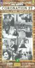
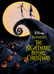
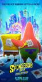
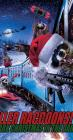
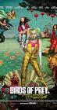
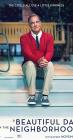
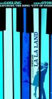
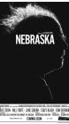
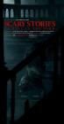
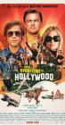

Historical: Weekly Top Box Office
http://www.imdb.com/boxoffice/
Showing Movies that were previously on this list. (Historical tracking started near the start of 2010.)- Normal View
List contains: 1590 items, 1954 hours. (401 are missing runtime)
Showing Movies that were previously on this list. (Historical tracking started near the start of 2010.)- Normal View
List contains: 1590 items, 1954 hours. (401 are missing runtime)
Stephen Klancher
...has seen 238
...has seen 396.9 hours
...has not seen 1557.1 hours

Timeline - Covers
Most Recent:
Captain Marvel
First Unseen:
Messy (# 2)
...has seen 238
...has seen 396.9 hours
...has not seen 1557.1 hours
Timeline - Covers
Most Recent:
Captain Marvel
First Unseen:
Messy (# 2)
Seen 23 times, Last seen December 25, 2022

It's a Wonderful Life (1946)
Stephen Klancher: SEEN 
This was our Christmas movie growing up with my dad and it has ingrained a like of Jimmy Stewart in my brain.
Seen 20 times, Last seen December 25, 2022

Seen 20 times, Last seen October 16, 2022

Avatar (2009)
Stephen Klancher: January 9, 2010
The plot is basically FernGully, which isn't a major criticism, it just follows an unsurprising path. The visuals were amazing. The 3D was very cool, but even without that the environments were incredible. It made me think of exploring new areas in World of Warcraft for the first time.
Seen 25 times, Last seen September 11, 2022

Jaws (1975) Releases on 1975-06-20
Stephen Klancher: February 16, 2009
Body in the boat scared the fuck out of me. That was an intense movie.

Seen 55 times, Last seen October 31, 2021

Shang-Chi and the Legend of the Ten Rings (2021)
Seen 27 times, Last seen August 15, 2021
Escape Room: Tournament of Champions (2021)
Seen 28 times, Last seen August 3, 2021
Seen 37 times, Last seen July 18, 2021
The Conjuring: The Devil Made Me Do It (2021)
Seen 45 times, Last seen June 27, 2021
Seen 12 times, Last seen June 27, 2021
The House Next Door: Meet the Blacks 2 (2021)
Seen 30 times, Last seen June 19, 2021

Seen 1 times, Last seen May 30, 2021

Seen 13 times, Last seen May 22, 2021
Die Bruderschaft des Cassoulet (2007) Airs on 2007-01-15
S1 - E6 of Sarah Wiener's Culinary Adventures
S1 - E6 of Sarah Wiener's Culinary Adventures
Seen 6 times, Last seen May 8, 2021

Scott Pilgrim vs. The World (2010)
Stephen Klancher: August 16, 2010
Ridiculously awesome. This is the style that comics and anime should take for live action film adaptations. The video game flavor to things was just pure joy. Whenever I end up really liking something I realize that sound has a lot to do with it. This movie used video game sounds and music throughout. There is absolutely a Pavlovian response as the movie uses many sounds from games that are tied to rewards... There was a fight where every hit had the sound of Sonic collecting rings. The humor was very fun, but the style of every part of this just tapped into the joy center of my brain.
Seen 11 times, Last seen May 8, 2021

Seen 5 times, Last seen April 10, 2021
Seen 6 times, Last seen April 4, 2021
First Half Final Round: Goldrick vs. Ortega/Kropp vs. Lentz (1991) Airs on 1991-02-14
S4 - E13 of American Gladiators
S4 - E13 of American Gladiators
Seen 47 times, Last seen March 26, 2021
Seen 10 times, Last seen March 26, 2021

Seen 5 times, Last seen February 13, 2021

The Lord of the Rings: The Fellowship of the Ring (2001) Releases on 2001-12-19
Stephen Klancher: SEEN
I read half-way through the books, quit for a while, then finished right before this came out. I actually like the movies better. I enjoy all three movies, but one notable thing about this one was much fun it was that everyone around me was really into it at the time. The fact that the girls I was friends with and girlfriend at the time were drooling over the actors just added another reason for everyone to be enthusiastic and want to keep rewatching it. So yeah, fun times. :-)

Seen 74 times, Last seen January 24, 2021

Seen 38 times, Last seen January 16, 2021

Alien (1979)
Stephen Klancher: January 15, 2008
I thought I had seen it before. Finally saw for sure now that I'm going through all the Alien and Predator movies with Nick.
Very cool movie.
Very cool movie.
Seen 39 times, Last seen January 10, 2021
Seen 38 times, Last seen January 2, 2021

Christmas Vacation (1989) Releases on 1989-12-01
Seen 59 times, Last seen January 2, 2021

Elf (2003)
Stephen Klancher: November 28, 2009
It pains the OCD part of my brain to mark this as watched when I missed the beginning and was not in the room the whole time... It was alright. It's Will Ferrell, sometimes I think he's funny and sometimes not. It's probably mood as much as content with him.
Seen 14 times, Last seen December 27, 2020

How the Grinch Stole Christmas (2000)

Seen 1 times, Last seen December 20, 2020
Standing on the Shoulders of Kubrick: The Legacy of 2001 (2007)

Seen 9 times, Last seen December 12, 2020

Die Hard (1988) Releases on 1988-07-15
Stephen Klancher: April 13, 2009
Yeah, I really hadn't seen Die Hard until today. That was a great action movie. I am very much a Bruce Willis fan, and Alan Rickman is a fantastic villain. Contrary to many action movies where there are only a few scenes of interest, I enjoyed this entire movie.
Seen 17 times, Last seen December 4, 2020

The Santa Clause (1994)
Seen 9 times, Last seen November 28, 2020
Fate/stay night: Heaven's Feel III. Spring Song (2020)
Seen 33 times, Last seen November 21, 2020

Toy Story (1995)
Stephen Klancher: SEEN
Pixar is always pretty solid and Tim Allen plus Tom Hanks make for some fun recognizable voice acting.
Seen 8 times, Last seen November 21, 2020
Seen 86 times, Last seen November 21, 2020

Guardians of the Galaxy (2014)
Stephen Klancher: August 12, 2014
Incredibly fun! All the more so since I went in thinking this was a bunch of characters unknown to me, and then finding out I knew half of them from the Infinity Trilogy.

Seen 4 times, Last seen November 8, 2020

Seen 26 times, Last seen November 7, 2020

The Nightmare Before Christmas (1993)
Stephen Klancher: November 4, 2007
I first saw this with Justine in 3D on the IMAX screen. Fun music!
Seen 34 times, Last seen November 7, 2020

Monsters, Inc. (2001)
Seen 12 times, Last seen November 1, 2020
Seen 69 times, Last seen October 24, 2020

Seen 53 times, Last seen October 17, 2020

Star Wars: Episode V - The Empire Strikes Back (1980)
Stephen Klancher: SEEN
This was the one I watched least when I was younger. The slightly less familiarity has made it more attractive for rewatching in later years. Also it's Star Wars. <3
Seen 30 times, Last seen October 17, 2020
Seen 6 times, Last seen October 3, 2020

Seen 46 times, Last seen October 2, 2020

The SpongeBob Movie: Sponge on the Run (2020)
Seen 26 times, Last seen September 27, 2020
The Personal History of David Copperfield (2019)

Seen 34 times, Last seen August 30, 2020

Back to the Future (1985)
Stephen Klancher: SEEN
I love the Back to the Future trilogy. Yes even the third one. I've always especially loved the music. Watching Predator at some point I was wondering why it was reminding me of Back to the Future... and it turns out the same guy did the music...


Seen 0 times, Last seen August 17, 2020
Seen 48 times, Last seen August 16, 2020


Seen 3 times, Last seen August 14, 2020

Juvenile Delinquents -- New World Order (2020)
Seen 2 times, Last seen August 12, 2020

Killer Raccoons 2: Dark Christmas in the Dark (2019)

Seen 92 times, Last seen July 16, 2020

Black Panther (2018) Releases on 2018-02-16
Stephen Klancher: February 22, 2018
Seen 37 times, Last seen July 6, 2020
Seen 12 times, Last seen March 15, 2020
Seen 34 times, Last seen March 15, 2020

Birds of Prey (and the Fantabulous Emancipation of One Harley Quinn) (2020)


Seen 12 times, Last seen December 28, 2019

Seen 28 times, Last seen December 22, 2019

A Beautiful Day in the Neighborhood (2019)

Seen 22 times, Last seen November 22, 2019

Casablanca (1942)
Stephen Klancher: August 4, 2003
I borrowed and watched this summer of 2002. Even then I had a vague idea that I wanted to see some of the most well known movies, with the IMDB top 250 as my idea for a good start.
I really enjoyed it! And so many elements or lines in it that could be called cliche now were actually their origin. This is the movie that solidified my interest in watching well rated "old movies." Compare to Citizen Kane.
I really enjoyed it! And so many elements or lines in it that could be called cliche now were actually their origin. This is the movie that solidified my interest in watching well rated "old movies." Compare to Citizen Kane.


Seen 58 times, Last seen November 22, 2019
Hacksaw Ridge (2016) Releases on 2016-11-04
Seen 24 times, Last seen November 21, 2019

City of God (2002) Releases on 2004-02-13
Stephen Klancher: SEEN
I got a hold of this movie because of Erin near the beginning of college, although I can't remember for certain if I watched it with her or not. The main impression I remember about this movie is that it was vivid both in color and content.
Seen 22 times, Last seen November 20, 2019

Star Wars: Episode IV - A New Hope (1977)
Stephen Klancher: SEEN
I am very much a Star Wars fan. I've read about 40 books, played a handful of games, and seen most of what there is to see. There were some summers growing up where I was mostly watching the Star Wars trilogy and playing Mario 3.
2011-02-26 - Watched Star Wars Begins, the excellent fan-made documentary.
2011-02-26 - Watched Star Wars Begins, the excellent fan-made documentary.
Seen 23 times, Last seen November 19, 2019
Inception (2010) Releases on 2010-07-16
Stephen Klancher: July 17, 2010
Dreams within dreams... there was never a chance I wouldn't like this movie. It was incredibly fun.
Seen 21 times, Last seen November 17, 2019

Fight Club (1999)
Stephen Klancher: SEEN
There's so much that is cool about this movie. But mostly the impact of the reveal the first time you watch it. The sort of Sixth-Sense change where you can then rewatch it as an entirely different experience.
Seen 24 times, Last seen November 16, 2019

The Lord of the Rings: The Return of the King (2003) Releases on 2003-12-17
Stephen Klancher: December 17, 2003
Probably my favorite of the trilogy, but they are all fantastic.
Seen 19 times, Last seen November 15, 2019

Schindler's List (1993)
Stephen Klancher: SEEN
I watched this in my 9th grade history class. Liam Neeson back when his only power was being German. No force, no lightsaber. But seriously, this is a serious movie. I don't remember much of the specifics at this point, but watching Life is Beautiful more recently made me think of watching this.
Seen 21 times, Last seen November 14, 2019

The Dark Knight (2008)
Stephen Klancher: July 19, 2008
Saw on the IMAX twice on the first Saturday after release. OMG so good! Got a picture of me with the Joker at the theater too.
Seen 24 times, Last seen November 13, 2019

12 Angry Men (1957)
Stephen Klancher: October 19, 2007
I actually saw the 1997 version first (Tony Danza!), but I love them both. Such a great thing to have a story focused down to pretty much one room and just watching the characters interact. I liked this (both versions actually) a lot.
Seen 18 times, Last seen November 12, 2019
The Good, the Bad and the Ugly (1966)
Stephen Klancher: SEEN
I knew I had enjoyed Unforgiven and Shane, but this was the movie which convinced me: I really enjoy westerns! I watched this with a girl I met on a bus. She forgot her purse and I argued with the bus driver and made him wait until she came running up from the previous bus stop. Obviously the only thing to do was invite her over for dinner and a western right?
Seen 23 times, Last seen November 11, 2019

Pulp Fiction (1994) Releases on 1994-10-14
Stephen Klancher: SEEN
Very fun. Reading Quentin Tarantino and Philosophy (http://www.amazon.com/Quentin-Tarantino-Philosophy-Popular-Culture/dp/0812696344) made it even more so.
Seen 17 times, Last seen November 10, 2019

The Godfather: Part II (1974)
Stephen Klancher: January 2, 2004
I can't say I remember a lot about this movie other than the fact that I watched with Bob not long after college started. And that he heard the third movie was bad so he refused to watch it... so this is where we stopped.
Seen 20 times, Last seen November 9, 2019
The Godfather (1972) Releases on 1972-03-24
Stephen Klancher: SEEN
I don't remember much about this movie directly. The main thing I remember is a comment from a friend while we all watched it together the summer before college. My girlfriend at the time was either disinterested or bothered by the violence, whereas I thought it was a cool movie. By my friend's observation, this was the first time in a long time that I insisted on an opinion contrary to hers. I don't remember being that bad, but the observation was memorable, and this movie reminds me of it.
Seen 12 times, Last seen November 9, 2019
Seen 18 times, Last seen November 8, 2019

The Shawshank Redemption (1994)
Stephen Klancher: SEEN
I'm not sure it forever deserves the top spot on IMDB, but definitely a good movie. I remember watching it on TV some night in Jr High when I was supposed to be working some project... let's see, do a diorama of a scene from 1984 or watch Shawshank? Hmm...
Seen 65 times, Last seen November 7, 2019
Untitled Avengers Movie (2019) Releases on 2019-05-03

Seen 100 times, Last seen November 5, 2019

La La Land (2016) Releases on 2016-12-16

Seen 6 times, Last seen November 3, 2019

The Current War (2017) Releases on 2018-01-19

Seen 30 times, Last seen November 1, 2019

Clue (1985) Releases on 1969-12-31

Seen 51 times, Last seen October 31, 2019

The Wolf of Wall Street (2013)


Seen 26 times, Last seen October 28, 2019

Invasion of the Body Snatchers (1956) Releases on 1969-12-31


Seen 42 times, Last seen October 23, 2019

Finding Nemo (2003)
Stephen Klancher: SEEN
The main thing I remember about this movie was that it had very pretty color. And I think I watched it with a few other people in the common room of our floor of my freshman dorm.


Seen 13 times, Last seen October 19, 2019

The Apartment (1960)
Stephen Klancher: December 13, 2008
Early in the movie I felt annoyed that Lemmon felt too much like his comedy character in Some Like It Hot, but overall both he and MacLaine were great in this movie.
Seen 17 times, Last seen October 18, 2019

Braveheart (1995)
Stephen Klancher: SEEN
Hmm, I'm not 100% I've seen the beginning of this movie. See this was the second rated R movie I ever saw, with the first being the movie Speed. My mom was on her honeymoon and I was with cousins and other family at a hotel whereever we were on the coast. So we got away with renting rated R movies. I watched Speed in one room and went to the next room and joined them in watching Braveheart. I mostly just remember the iconic, "You can take our lives, but you can never take our freedom!" Also I saw a statue of William Wallace in front of a castle years later. I should rewatch it someday just because now I know and love Patrick McGoohan.

Seen 15 times, Last seen October 16, 2019

Million Dollar Baby (2004)
Stephen Klancher: July 4, 2009
Excellent movie! A lot like Gran Torino. Those three are fantastic actors. Some really hard to watch scenes, but just very good.
Seen 13 times, Last seen October 15, 2019

Hotel Rwanda (2004)
Seen 18 times, Last seen October 14, 2019

V for Vendetta (2005) Releases on 2006-03-17
Stephen Klancher: March 17, 2006
I loved this movie. In terms of pure enjoyment coming out of the theater this ranks near the top for me. All kinds of cool.
Seen 18 times, Last seen October 13, 2019

Monty Python and the Holy Grail (1975)
Stephen Klancher: SEEN
I had heard every joke long before I actually saw this, so while it was funny, it was underwhelming and not very memorable.
Seen 16 times, Last seen October 12, 2019

Star Wars: Episode VI - Return of the Jedi (1983)
Seen 20 times, Last seen October 11, 2019

Mr. Smith Goes to Washington (1939)
Seen 46 times, Last seen October 8, 2019

The Lion King (1994)
Stephen Klancher: SEEN
Back in the good old days of Disney movies... Scar was a great villain and the song Be Prepared is incredible.
Seen 18 times, Last seen October 7, 2019

Cinema Paradiso (1988) Releases on 1969-12-31
Stephen Klancher: SEEN
I watched this with my mom in Bakersfield at some point. I remember hearing the title and not thinking I was interested, until either I looked it up or she told me it was on the IMDb list... now it was part of the mission! The movie itself was okay...
Seen 14 times, Last seen October 6, 2019
The Prestige (2006)
Stephen Klancher: SEEN
I liked this a lot. Although I seem to remember that something about it lead to an argument. Whatever, very fun.
Seen 76 times, Last seen October 6, 2019

The Lion King (2019) Releases on 2019-07-19
Seen 20 times, Last seen October 5, 2019
The Green Mile (1999)
Seen 15 times, Last seen October 4, 2019

Gladiator (2000)
Stephen Klancher: SEEN
Fun movie... I always picture the "walking through the fields" sequence... Also, Battle!
Seen 13 times, Last seen October 1, 2019

Rain Man (1988) Releases on 1969-12-31
Stephen Klancher: SEEN
I remember watching this with Punchie... I assume we finished it, although I can't say I remember how it ended.
Seen 16 times, Last seen October 1, 2019

Terminator 2: Judgment Day (1991)
Seen 39 times, Last seen October 1, 2019

Crouching Tiger, Hidden Dragon (2000)
Stephen Klancher: SEEN
I remember being so pleased when I watched this and, without looking at the subtitles, I understood the phrase "I don't know" spoken in Chinese.
Seen 29 times, Last seen October 1, 2019

Nebraska (2013) Releases on 2013-05-23
Seen 19 times, Last seen September 29, 2019

The Truman Show (1998)
Stephen Klancher: SEEN
I loved this movie. The only problem was it gave me a more specific scenario for my general paranoia to latch on to. Clearly my life is full of people behind the scenes watching and manipulating my life. If I tune my radio just right I might be able to hear their radio chatter...
Seen 55 times, Last seen September 29, 2019
Fast & Furious Presents: Hobbs & Shaw (2019)
Seen 14 times, Last seen September 28, 2019

Barry Lyndon (1975)
Seen 13 times, Last seen September 27, 2019
Howl's Moving Castle (2004) Releases on 1969-12-31
Seen 19 times, Last seen September 26, 2019

Mary and Max (2008) Releases on 2009-04-09
Stephen Klancher: December 11, 2010
Weirdly funny and endearing. I was surprised how much I enjoyed it.
Seen 17 times, Last seen September 25, 2019

Network (1976) Releases on 1969-12-31
Stephen Klancher: April 25, 2010
A lot of cool moments throughout this. I enjoyed watching Faye Dunaway in Bonnie and Clyde just recently and she and William Holden were great in this.
Seen 18 times, Last seen September 24, 2019

Into the Wild (2007)
Stephen Klancher: April 22, 2009
Good movie. Better than I thought it would be from the description and suited my mood today.
Seen 18 times, Last seen September 23, 2019

My Neighbor Totoro (1988)
Stephen Klancher: April 21, 2010
Cat-bus is awesome. Most of what I like in this movie is better done in Spirited Away. But still this was a relaxing movie with good animation and occasionally good music too.
Seen 17 times, Last seen September 22, 2019

Kill Bill: Vol. 1 (2003) Releases on 2003-10-10
Stephen Klancher: October 18, 2003
It was super exciting to go see this in the theater. I had watched other Tarantino movies over the previous year or two and introduced them to Brett sometime after we met. And seeing a movie like that in a theater down the street from a university makes for a fun crowd.
Seen 22 times, Last seen September 21, 2019

It Happened One Night (1934)
Stephen Klancher: July 7, 2009
I was amused at the Walls of Jericho motif and the fact that they asked for a trumpet at the end. This time, dear, he gave a damn.
Seen 19 times, Last seen September 20, 2019

Cool Hand Luke (1967)
Stephen Klancher: June 21, 2009
Aptly named... he's a cool character. The Lucy and 50 eggs scenes were fun. I liked the simple question he asked of god near the end: "You made me like I am; just where do I fit?"
Seen 18 times, Last seen September 19, 2019

The Big Lebowski (1998) Releases on 1998-02-15
Stephen Klancher: SEEN
Brett introduced me to Lebowski and I have since watched it many times. Love it.
Seen 19 times, Last seen September 18, 2019

Fargo (1996) Releases on 1996-04-05
Seen 17 times, Last seen September 17, 2019

Wild Strawberries (1957)
Seen 121 times, Last seen September 17, 2019

Silver Linings Playbook (2012) Releases on 2012-11-21
Seen 46 times, Last seen September 16, 2019

Blade Runner (1982)
Stephen Klancher: SEEN
I watched this and only thought it was ok. I found out later that the Director's Cut which I watched was lacking the narration of the original. I often really enjoy narration in movies and might have enjoyed this more if I had a clearer understanding of what was going on in some parts. Maybe someday I'll have to rewatch the original version.
Seen 19 times, Last seen September 15, 2019

Up (2009)
Stephen Klancher: June 14, 2009
That was a fantastic movie. Visually very pretty. The kid and the dog are a great counterpoint to the old man. Not many movies manage to be so happy and kid -friendly and actually be so amazing. I walked out of the theater happy!
Seen 34 times, Last seen September 15, 2019

Scary Stories to Tell in the Dark (2019)
Seen 46 times, Last seen September 15, 2019

Once Upon a Time in Hollywood (2019)
Seen 17 times, Last seen September 14, 2019

2001: A Space Odyssey (1968)
Stephen Klancher: SEEN
I think I watched parts of this in my Physics class in high school, then came home and watched the rest. I think there was no justification other than that Mr Loritz just wanted to watch the movie.
Seen 19 times, Last seen September 13, 2019

Lawrence of Arabia (1962)
Stephen Klancher: July 2, 2008
I remember my mom telling me for a long time that this was her favorite movie, so I was excited to watch it. Very cool epic.
Seen 19 times, Last seen September 12, 2019

The Lives of Others (2006)
Seen 19 times, Last seen September 11, 2019

Aliens (1986)
Stephen Klancher: January 17, 2008
Game over man! A totally different kind of cool than the first one. Plus like half of the sounds from StarCraft are from this movie.
Seen 20 times, Last seen September 10, 2019

American Beauty (1999)
Stephen Klancher: December 31, 2002
Fantastic movie. Many good quotables. I tend to rather watch something new instead of rewatching anything, but if I see this on I'm completely unable to pull myself away.
Seen 25 times, Last seen September 9, 2019

Vertigo (1958) Releases on 1969-12-31
Seen 18 times, Last seen September 8, 2019

Citizen Kane (1941)
Stephen Klancher: February 12, 2008
Overrated. Compare to Casablanca because they are both "old movies" (1 year apart) and both always ranked high on movie lists.
Seen 77 times, Last seen September 7, 2019

Django Unchained (2012) Releases on 2012-12-25
Seen 18 times, Last seen September 6, 2019

Spirited Away (2001) Releases on 2001-07-20
Stephen Klancher: April 6, 2003
I watched with in a theater in Bakersfield with my mom. I don't know if it was a rerelease or late after the release or if this is all they did in Bakersfield, but I seem to remember that it was only playing on this one screen in town and it was an abnormally small one.
I really enjoyed the animation and the fantasy of the whole setting.
I really enjoyed the animation and the fantasy of the whole setting.
Seen 18 times, Last seen September 5, 2019

City Lights (1931)
Stephen Klancher: October 20, 2008
A few lol moments. I'm not very into silent films. I think the main role they should play in modern times is a lesson for filmmakers: You can communicate without saying something directly in dialog.
Seen 20 times, Last seen September 4, 2019

Dr. Strangelove or: How I Learned to Stop Worrying and Love the Bomb (1964)
Stephen Klancher: SEEN
Peter Sellers is amazing. Just remember, "you can't fight in here! This is the War Room!"
Seen 22 times, Last seen September 3, 2019

Raiders of the Lost Ark (1981)
Stephen Klancher: SEEN
I love Indiana Jones and Harrison Ford. I watched a lot of Star Wars and Indiana Jones while growing up. Just thinking about it makes me want to watch again...


Seen 51 times, Last seen August 1, 2019

Donnie Darko (2001) Releases on 1969-12-31
Stephen Klancher: SEEN
I remember getting mad because I was watching this at Alyson's house with a group where half of the people were really interested in the movie and the less interested half were making it hard to hear and enjoy it. Regardless it was fun. I always looked for more meaning in it than I was able to find though. But it created a great atmosphere and was a lot of fun to watch.

Seen 38 times, Last seen July 24, 2019

Memento (2000) Releases on 2000-10-11
Stephen Klancher: SEEN
Showing events out of chronological order can range from confusing to really cool. Memento used it in a gimmicky way, but it turned out great.
Seen 20 times, Last seen July 24, 2019

A Monster Calls (2016) Releases on 2016-10-21
Seen 19 times, Last seen July 22, 2019

Gandhi (1982) Releases on 1969-12-31
Stephen Klancher: January 20, 2010
I learn more from Hollywood than I ever did from school. Seems like some of this stuff would have been cool to learn more about in a history class.
Seen 22 times, Last seen July 16, 2019
The Wizard of Oz (1939) Releases on 1939-08-25
Stephen Klancher: SEEN
I liked the Wizard of Oz and have often been excited to see newer takes on it. At some point my mom took me to see Wicked and I loved it. Though it turned out disappointing, I remember being excited over the SciFi variant Tin Man. Also, Zardoz. haha.
Seen 1 times, Last seen July 3, 2019

Moon (2009) Releases on 2009-07-10
Stephen Klancher: August 8, 2010
Pretty cool, although I feel like once the viewer understands what is going on there wasn't much in the way of twists or surprises. Still fun to watch though.
Seen 29 times, Last seen July 1, 2019

The Terminator (1984) Releases on 1969-12-31
Stephen Klancher: May 13, 2009
I was surprised to realize I had not actually seen this. It seemed like I must have, so I had already marked it as seen. Really really shows its age at this point, but still a decent movie. The second is much better though. Part of the problem is I already know everything about this from 2 sequels and part of a TV show. Glad I made sure I had seen this before T4 comes out.

Seen 7 times, Last seen June 13, 2019

Captain Fantastic (2016) Releases on 2016-07-08

Seen 8 times, Last seen June 1, 2019

Reservoir Dogs (1992) Releases on 1969-12-31
Stephen Klancher: March 25, 2003
I remember Sean Florin recommending this movie to me long long ago. It was one of the earliest movies I downloaded and I invited a few friends over to watch it with me. It was an amazing movie to go into knowing nothing and having no expectations.

Seen 5 times, Last seen May 28, 2019

Magnolia (1999)
Stephen Klancher: May 20, 2010
Frogs, what the fuck? Long but fun to watch... so many good people in it. Tom Cruise and William H Macy were fun to watch and I always like seeing Philip Seymour Hoffman.
Seen 22 times, Last seen May 28, 2019
Constantine (2005)
Stephen Klancher: SEEN
I saw this in a free screening at UCSD before it came out. I thought it was very cool. I very much liked both the villainous angel and the whole "devil will collect him personally" thing.

Seen 17 times, Last seen May 19, 2019

The Maltese Falcon (1941)
Stephen Klancher: SEEN
One of the early "old" movies that I watched. Enjoying it firmed up the notion that I would actually go through the IMDb list.
Seen 53 times, Last seen May 13, 2019

Captain Marvel (2019) Releases on 2019-03-08
Stephen Klancher: March 30, 2019

Seen 3 times, Last seen May 1, 2019

Kiss Kiss Bang Bang (2005)

Seen 4 times, Last seen April 30, 2019
Legends of the Fall (1994) Releases on 1995-01-13

Seen 9 times, Last seen April 25, 2019

Groundhog Day (1993) Releases on 1969-12-31
Stephen Klancher: SEEN
The joke is obvious but it's also the truth: I watched this movie over and over and over. This was one of a handful of movies we rewatched frequently growing up at my dad's house. I love Bill Murray and I love this movie.
Seen 42 times, Last seen April 14, 2019
How to Train Your Dragon: The Hidden World (2019)


Seen 61 times, Last seen February 16, 2019

Spider-Man: Into the Spider-Verse (2018)

Seen 40 times, Last seen February 2, 2019
Mary Poppins Returns (2018) Releases on 2018-12-25

Seen 34 times, Last seen December 22, 2018

Fantastic Beasts: The Crimes of Grindelwald (2018)

Seen 20 times, Last seen November 24, 2018
The Nutcracker and the Four Realms (2018)

Seen 44 times, Last seen November 22, 2018

Blade Runner 2049 (2017) Releases on 2017-10-06
Stephen Klancher: October 12, 2017
Seen 27 times, Last seen October 20, 2018
The House with a Clock in Its Walls (2018)
Seen 55 times, Last seen October 13, 2018

Crazy Rich Asians (2018)
Stephen Klancher: December 11, 2018

Seen 55 times, Last seen September 23, 2018

M:I 6 - Mission Impossible (2018) Releases on 2018-07-27

Seen 41 times, Last seen September 16, 2018
Christopher Robin (2018) Releases on 2018-08-03

Seen 34 times, Last seen September 16, 2018

BlacKkKlansman (2018) Releases on 2018-08-10
Stephen Klancher: March 1, 2019
Seen 20 times, Last seen September 2, 2018
Slender Man (2018) Releases on 2018-08-10

Seen 41 times, Last seen August 26, 2018
Hotel Transylvania 3: Summer Vacation (2018) Releases on 2018-07-13
Seen 34 times, Last seen August 26, 2018
Mamma Mia! Here We Go Again (2018) Releases on 2018-07-20
Seen 27 times, Last seen August 18, 2018
The Equalizer 2 (2018) Releases on 2018-07-20
Seen 41 times, Last seen August 18, 2018
Ant-Man and the Wasp (2018) Releases on 2018-07-06
Seen 13 times, Last seen August 18, 2018
The Spy Who Dumped Me (2018) Releases on 2018-08-03
Seen 55 times, Last seen August 11, 2018

Incredibles 2 (2018) Releases on 2018-06-15
Stephen Klancher: June 17, 2018
Seen 6 times, Last seen August 11, 2018
The Darkest Minds (2018) Releases on 2018-08-03
Seen 13 times, Last seen August 11, 2018
Teen Titans Go! To the Movies (2018) Releases on 2018-07-27
Seen 41 times, Last seen August 4, 2018

Jurassic World: Fallen Kingdom (2018) Releases on 2018-06-22
Seen 27 times, Last seen August 4, 2018
The First Purge (2018) Releases on 2018-07-04
Seen 6 times, Last seen July 28, 2018
Unfriended: Dark Web (2018) Releases on 2018-07-20
Seen 13 times, Last seen July 28, 2018
Sorry to Bother You (2018) Releases on 2018-07-06
Seen 14 times, Last seen July 21, 2018
Annie Hall (1977) Releases on 1977-04-20
Stephen Klancher: SEEN
I watched this while doing other things and I'm never sure if that means I'm not giving something a fair chance, but I didn't care for this movie.
Seen 20 times, Last seen July 21, 2018
Sicario: Day of the Soldado (2018) Releases on 2018-06-29

Seen 20 times, Last seen July 14, 2018
Won't You Be My Neighbor? (2018) Releases on 2018-01-19
Seen 41 times, Last seen July 7, 2018

Solo: A Star Wars Story (2018) Releases on 2018-05-25
Stephen Klancher: May 26, 2018
Seen 62 times, Last seen June 30, 2018

Avengers: Infinity War (2018) Releases on 2018-05-04
Stephen Klancher: January 5, 2019
Seen 34 times, Last seen June 16, 2018
Life of the Party (2018) Releases on 2018-05-11
Seen 25 times, Last seen May 26, 2018
Super Troopers 2 (2018) Releases on 2018-04-20

Seen 34 times, Last seen May 5, 2018
Ready Player One (2018) Releases on 2018-03-30

Seen 13 times, Last seen April 21, 2018
Chappaquiddick (2018) Releases on 2018-04-06
Seen 34 times, Last seen April 21, 2018
I Can Only Imagine (2018) Releases on 2018-03-16
Seen 20 times, Last seen April 14, 2018
Sherlock Gnomes (2018) Releases on 2018-03-23
Seen 20 times, Last seen April 14, 2018

Pacific Rim: Uprising (2018) Releases on 2018-02-23
Seen 27 times, Last seen April 7, 2018

A Wrinkle in Time (2018) Releases on 2018-03-09

Seen 13 times, Last seen April 7, 2018
Paul, Apostle of Christ (2018) Releases on 2018-03-23
Seen 13 times, Last seen March 24, 2018
The Strangers: Prey at Night (2018) Releases on 2018-03-09

Seen 6 times, Last seen March 17, 2018
The Hurricane Heist (2018) Releases on 2018-03-09
Seen 84 times, Last seen March 10, 2018
The Greatest Showman (2017) Releases on 2017-12-25
Seen 27 times, Last seen March 10, 2018

Fifty Shades Freed (2018) Releases on 2018-02-09
Seen 20 times, Last seen March 3, 2018
The 15:17 to Paris (2018) Releases on 2018-02-09
Seen 20 times, Last seen February 24, 2018
Winchester (2018) Releases on 2018-02-02
Seen 27 times, Last seen February 24, 2018

Maze Runner: The Death Cure (2018) Releases on 2018-01-26

Seen 27 times, Last seen February 17, 2018
Den of Thieves (2018) Releases on 2018-01-19
Seen 27 times, Last seen February 17, 2018

The Shape of Water (2017) Releases on 2017-12-08
Seen 35 times, Last seen February 10, 2018

Paddington 2 (2017) Releases on 2018-01-12
Seen 21 times, Last seen January 27, 2018
The Commuter (2018) Releases on 2018-01-12
Seen 49 times, Last seen January 27, 2018
Star Wars: The Last Jedi (2017) Releases on 2017-12-15
Stephen Klancher: December 19, 2017
Seen 6 times, Last seen January 27, 2018
Forever My Girl (2018) Releases on 2018-01-19
Seen 28 times, Last seen January 27, 2018
Insidious: The Last Key (2018) Releases on 2018-01-05
Seen 35 times, Last seen January 20, 2018
Darkest Hour (2017) Releases on 2017-12-22
Seen 35 times, Last seen January 20, 2018
Pitch Perfect 3 (2017) Releases on 2017-12-22

Seen 6 times, Last seen January 13, 2018

Molly's Game (2017) Releases on 2018-01-05
Seen 13 times, Last seen January 13, 2018

All the Money in the World (2017) Releases on 2017-12-25

Seen 34 times, Last seen December 23, 2017

Justice League (2017) Releases on 2017-11-17
Stephen Klancher: November 29, 2017

Seen 41 times, Last seen December 23, 2017

Murder on the Orient Express (2017) Releases on 2017-11-10
Seen 48 times, Last seen December 23, 2017

Thor: Ragnarok (2017) Releases on 2017-11-03
Stephen Klancher: May 6, 2018
Seen 13 times, Last seen December 23, 2017
The Disaster Artist (2017) Releases on 2017-12-08
Seen 34 times, Last seen December 23, 2017

Lady Bird (2017) Releases on 2017-11-10
Stephen Klancher: November 11, 2018
Seen 41 times, Last seen December 23, 2017
Daddy's Home 2 (2017) Releases on 2017-11-10

Seen 20 times, Last seen December 9, 2017

Three Billboards Outside Ebbing, Missouri (2017) Releases on 2017-11-10
Stephen Klancher: March 3, 2018
Seen 34 times, Last seen December 9, 2017
A Bad Moms Christmas (2017) Releases on 2017-11-01
Seen 6 times, Last seen December 2, 2017
Roman J. Israel, Esq. (2017) Releases on 2017-11-22

Seen 33 times, Last seen November 18, 2017

Happy Death Day (2017) Releases on 2017-10-13
Seen 26 times, Last seen November 18, 2017
Boo 2! A Madea Halloween (2017) Releases on 2017-10-20
Seen 12 times, Last seen November 11, 2017
Thank You for Your Service (2017) Releases on 2017-10-27

Seen 19 times, Last seen November 3, 2017
The Foreigner (2017) Releases on 2017-10-13

Seen 27 times, Last seen October 28, 2017
American Made (2017) Releases on 2017-09-29
Seen 34 times, Last seen October 28, 2017
Kingsman: The Golden Circle (2017) Releases on 2017-09-22
Seen 13 times, Last seen October 21, 2017

The Mountain Between Us (2017) Releases on 2017-10-20
Seen 27 times, Last seen October 21, 2017

The LEGO NINJAGO Movie (2017) Releases on 2017-09-22
Seen 13 times, Last seen October 21, 2017

Victoria and Abdul (2017) Releases on 2017-09-22
Seen 13 times, Last seen October 14, 2017

Battle of the Sexes (2017) Releases on 2017-09-22
Seen 20 times, Last seen October 7, 2017

American Assassin (2017) Releases on 2017-09-15

Seen 18 times, Last seen September 30, 2017

The Hitman's Bodyguard (2017) Releases on 2017-08-18
Seen 6 times, Last seen September 30, 2017
Friend Request (2016) Releases on 2016-10-07

Seen 18 times, Last seen September 30, 2017

Wind River (2017) Releases on 2017-08-04
Seen 52 times, Last seen September 23, 2017

Spider-Man: Homecoming (2017) Releases on 2017-07-07

Seen 18 times, Last seen September 23, 2017
Annabelle: Creation (2017) Releases on 2017-08-11
Seen 24 times, Last seen September 16, 2017
The Emoji Movie (2017) Releases on 2017-07-28
Seen 4 times, Last seen September 16, 2017
Logan Lucky (2017) Releases on 2017-08-18

Seen 12 times, Last seen August 19, 2017
The Dark Tower (2017) Releases on 2017-08-04
Seen 6 times, Last seen August 19, 2017
The Glass Castle (2017) Releases on 2017-08-11
Seen 19 times, Last seen August 19, 2017

Atomic Blonde (2017) Releases on 2017-07-28
Seen 6 times, Last seen August 19, 2017
The Nut Job 2: Nutty by Nature (2017) Releases on 2017-08-11
Seen 26 times, Last seen August 12, 2017
War for the Planet of the Apes (2017) Releases on 2017-07-14
Seen 40 times, Last seen August 12, 2017

Despicable Me 3 (2017) Releases on 2017-06-30
Seen 13 times, Last seen August 5, 2017

Valerian and the City of a Thousand Planets (2017) Releases on 2017-07-21


Seen 20 times, Last seen July 29, 2017

The Big Sick (2017) Releases on 2017-07-14
Stephen Klancher: November 10, 2017
Seen 27 times, Last seen July 22, 2017

Transformers: The Last Knight (2017) Releases on 2017-06-23
Seen 27 times, Last seen July 16, 2017

47 Meters Down (2017) Releases on 2017-06-16

Seen 41 times, Last seen July 8, 2017
Pirates of the Caribbean: Dead Men Tell No Tales (2017) Releases on 2017-05-26


Seen 27 times, Last seen July 1, 2017

Captain Underpants: The First Epic Movie (2017) Releases on 2017-06-02
Seen 55 times, Last seen July 1, 2017

Guardians of the Galaxy Vol. 2 (2017) Releases on 2017-05-05
Stephen Klancher: April 29, 2018
Seen 13 times, Last seen June 24, 2017

It Comes at Night (2017) Releases on 2017-06-09
Seen 27 times, Last seen June 17, 2017
Alien: Covenant (2017) Releases on 2017-05-19

Seen 27 times, Last seen June 17, 2017

Everything, Everything (2017) Releases on 2017-05-19
Seen 27 times, Last seen June 10, 2017
King Arthur: Legend of the Sword (2017) Releases on 2017-05-12
Seen 20 times, Last seen June 10, 2017
Diary of a Wimpy Kid: The Long Haul (2017) Releases on 2017-05-19
Seen 27 times, Last seen May 27, 2017

How to Be a Latin Lover (2017) Releases on 2017-04-28
Seen 20 times, Last seen May 20, 2017
Baahubali 2: The Conclusion (2017) Releases on 2017-04-28
Seen 34 times, Last seen May 13, 2017

Smurfs: The Lost Village (2017) Releases on 2017-04-07

Seen 6 times, Last seen April 30, 2017
The Lost City of Z (2016) Releases on 2017-04-21

Seen 41 times, Last seen April 23, 2017
Kong: Skull Island (2017) Releases on 2017-03-10
Seen 55 times, Last seen April 23, 2017
Get Out (2017) Releases on 2017-02-24
Stephen Klancher: January 6, 2018
Seen 13 times, Last seen April 23, 2017
The Case for Christ (2017) Releases on 2017-04-07
Seen 13 times, Last seen April 15, 2017
Ghost in the Shell (2017) Releases on 2017-03-31
Seen 40 times, Last seen April 15, 2017

Logan (2017) Releases on 2017-03-03
Stephen Klancher: September 1, 2018
Seen 6 times, Last seen April 8, 2017

The Zookeeper's Wife (2017) Releases on 2017-03-31

Seen 13 times, Last seen April 2, 2017

The Belko Experiment (2016) Releases on 2017-03-17
Seen 48 times, Last seen April 2, 2017

The Lego Batman Movie (2017)
Seen 20 times, Last seen March 27, 2017

Before I Fall (2017) Releases on 2017-03-03
Seen 42 times, Last seen March 27, 2017
John Wick: Chapter 2 (2017) Releases on 2017-02-10
Seen 77 times, Last seen March 27, 2017
Hidden Figures (2017) Releases on 2017-01-13
Seen 34 times, Last seen March 19, 2017
Fifty Shades Darker (2017) Releases on 2017-02-10
Seen 20 times, Last seen March 11, 2017

The Great Wall (2016) Releases on 2017-02-17

Seen 27 times, Last seen February 25, 2017

A Dog's Purpose (2017) Releases on 2017-01-27
Seen 0 times, Last seen February 20, 2017
A Cure for Wellness (2017) Releases on 2017-02-17

Seen 7 times, Last seen February 12, 2017
The Space Between Us (2016) Releases on 2016-08-19
Seen 20 times, Last seen February 11, 2017

xXx: Return of Xander Cage (2017) Releases on 2017-01-20
Seen 13 times, Last seen February 11, 2017

Resident Evil: The Final Chapter (2016) Releases on 2017-01-27

Seen 20 times, Last seen February 4, 2017
Monster Trucks (2017) Releases on 2017-01-13
Seen 48 times, Last seen February 4, 2017

Rogue One: A Star Wars Story (2016)

Seen 12 times, Last seen January 29, 2017
The Bye Bye Man (2017) Releases on 2017-01-13
Seen 13 times, Last seen January 29, 2017

Patriots Day (2016) Releases on 2017-01-13

Seen 13 times, Last seen January 22, 2017
Underworld: Blood Wars (2016) Releases on 2017-01-06


Seen 20 times, Last seen January 8, 2017

Manchester by the Sea (2016) Releases on 2016-11-18
Seen 20 times, Last seen January 8, 2017

Collateral Beauty (2016) Releases on 2016-12-16
Seen 21 times, Last seen January 2, 2017

Office Christmas Party (2016) Releases on 2016-12-09
Seen 49 times, Last seen December 25, 2016

Doctor Strange (2016)
Seen 42 times, Last seen December 25, 2016

Arrival (2016) Releases on 2016-11-11
Seen 35 times, Last seen December 25, 2016
Fantastic Beasts and Where to Find Them (2016)
Seen 14 times, Last seen December 25, 2016
Nocturnal Animals (2016) Releases on 2016-12-09

Seen 13 times, Last seen December 11, 2016
Bad Santa 2 (2016) Releases on 2016-11-23

Seen 27 times, Last seen December 11, 2016

Almost Christmas (2016) Releases on 2016-11-11
Seen 13 times, Last seen December 4, 2016
The Edge of Seventeen (2016) Releases on 2016-09-30
Seen 6 times, Last seen November 27, 2016

Bleed for This (2016) Releases on 2016-11-23
Seen 41 times, Last seen November 27, 2016

The Accountant (2016) Releases on 2016-10-14
Seen 27 times, Last seen November 20, 2016
Jack Reacher: Never Go Back (2016) Releases on 2016-10-21
Seen 27 times, Last seen November 20, 2016

Boo! A Madea Halloween (2016) Releases on 2016-10-21
Seen 41 times, Last seen November 13, 2016

Miss Peregrine's Home for Peculiar Children (2016)
Seen 20 times, Last seen November 13, 2016
Ouija: Origin of Evil (2016) Releases on 2016-10-21
Seen 13 times, Last seen November 6, 2016

Keeping Up with the Joneses (2016) Releases on 2016-10-21
Seen 6 times, Last seen November 6, 2016
Ae Dil Hai Mushkil (2016) Releases on 2016-10-28


Seen 13 times, Last seen October 30, 2016
Kevin Hart: What Now? (2016) Releases on 2016-10-14

Seen 13 times, Last seen October 23, 2016

Middle School: The Worst Years of My Life (2016)

Seen 13 times, Last seen October 16, 2016
Queen of Katwe (2016) Releases on 2016-09-30


Seen 41 times, Last seen October 9, 2016

Don't Breathe (2016) Releases on 2016-08-26
Seen 20 times, Last seen October 2, 2016
When the Bough Breaks (2016) Releases on 2016-09-09
Seen 41 times, Last seen October 2, 2016

Kubo and the Two Strings (2016) Releases on 2016-08-19

Seen 41 times, Last seen September 25, 2016
Pete's Dragon (2016) Releases on 2016-08-12
Seen 13 times, Last seen September 25, 2016
The Wild Life (2016) Releases on 2016-09-09
Seen 34 times, Last seen September 18, 2016

Sausage Party (2016) Releases on 2016-08-12
Seen 13 times, Last seen September 18, 2016

Hell or High Water (2016) Releases on 2016-08-12
Seen 6 times, Last seen September 11, 2016
The Light Between Oceans (2016) Releases on 2016-09-02
Seen 13 times, Last seen September 11, 2016

Mechanic: Resurrection (2016) Releases on 2016-08-26

Seen 13 times, Last seen August 28, 2016
Florence Foster Jenkins (2016) Releases on 2016-08-12


Seen 13 times, Last seen July 31, 2016
The Infiltrator (2016) Releases on 2016-07-13
Seen 6 times, Last seen July 31, 2016
Hillary's America: The Secret History of the Democratic Party (2016) Releases on 2016-07-15


Seen 35 times, Last seen July 3, 2016
X-Men: Apocalypse (2016)
Stephen Klancher: August 19, 2018
I enjoyed that a lot more than the Rotten Tomatoes score would have suggested. Lots of elements that tie back to what was shown in the 90s animated series.
Seen 27 times, Last seen July 3, 2016

Teenage Mutant Ninja Turtles: Out of the Shadows (2016)
Seen 48 times, Last seen June 26, 2016

Captain America: Civil War (2016) Releases on 2016-05-06
Stephen Klancher: April 23, 2018


Seen 70 times, Last seen February 28, 2016

Star Wars: The Force Awakens (2015)


Seen 20 times, Last seen February 7, 2016
13 Hours: The Secret Soldiers of Benghazi (2016)

Seen 34 times, Last seen January 31, 2016
The Big Short (2015) Releases on 2015-12-23

Seen 27 times, Last seen January 17, 2016
Alvin and the Chipmunks: The Road Chip (2015)

Seen 48 times, Last seen January 10, 2016
The Hunger Games: Mockingjay - Part 2 (2015)


Seen 18 times, Last seen December 11, 2015

The Secret in Their Eyes (2009)
Stephen Klancher: July 18, 2010
The last of my initial watch through of the IMDb Top 250. Decent movie. Memorable to me near the end is the line "Tell him at least to talk to me."


Seen 20 times, Last seen November 15, 2015

Paranormal Activity: The Ghost Dimension (2015)

Seen 64 times, Last seen November 12, 2015

The Imitation Game (2014) Releases on 2014-12-25


Seen 8 times, Last seen October 30, 2015

Strangers on a Train (1951)
Stephen Klancher: April 5, 2009
Solid main characters made this a lot of fun to see. I kept seeing Bruno as Bill Murray and Guy as Alan Cumming. Bruno was a great clever-psycho bad guy. And that ending had to be the most dangerous merry-go-round in the world.


Seen 7 times, Last seen October 5, 2015

The Green Inferno (2013) Releases on 2013-09-08

Seen 55 times, Last seen September 27, 2015

Mission: Impossible - Rogue Nation (2015)


Seen 63 times, Last seen July 6, 2015

Avengers: Age of Ultron (2015) Releases on 2015-05-01


Seen 2 times, Last seen June 7, 2015

Boyhood (2014) Releases on 2014-08-15


Seen 5 times, Last seen April 19, 2015
While We're Young (2014) Releases on 0000-00-00

Seen 34 times, Last seen April 13, 2015

The Second Best Exotic Marigold Hotel (2015)
Seen 55 times, Last seen April 13, 2015

Kingsman: The Secret Service (2015)


Seen 47 times, Last seen March 29, 2015
The SpongeBob Movie: Sponge Out of Water (2015)

Seen 2 times, Last seen March 20, 2015
Cinderella Man (2005) Releases on 2005-05-23


Seen 13 times, Last seen February 23, 2015
The Seventh Son (2013) Releases on 2011-03-21
Seen 13 times, Last seen February 16, 2015

Black or White (2014) Releases on 2014-09-06


Seen 32 times, Last seen January 26, 2015

The Hobbit: The Battle of the Five Armies (2014) Releases on 2014-12-10
Seen 32 times, Last seen January 26, 2015

Night at the Museum: Secret of the Tomb (2014)

Seen 54 times, Last seen January 19, 2015
The Hunger Games: Mockingjay - Part 1 (2014)
Seen 12 times, Last seen January 19, 2015

The Woman in Black: Angel of Death (2015)


Seen 27 times, Last seen December 21, 2014

The Theory of Everything (2014) Releases on 0000-00-00


Seen 41 times, Last seen December 6, 2014
St. Vincent (2014) Releases on 2014-09-05
Seen 14 times, Last seen November 30, 2014
Beyond the Lights (2014) Releases on 2014-11-14
Seen 20 times, Last seen November 23, 2014

Nightcrawler (2014) Releases on 0000-00-00
Seen 32 times, Last seen November 15, 2014
Alexander and the Terrible, Horrible, No Good, Very Bad Day (2014)
Seen 20 times, Last seen November 15, 2014

John Wick (2014)


Seen 19 times, Last seen October 18, 2014

The Boxtrolls (2014) Releases on 2014-08-31


Seen 41 times, Last seen September 21, 2014

The Hundred-Foot Journey (2014) Releases on 2014-08-08
Seen 6 times, Last seen September 19, 2014

Slumdog Millionaire (2008)
Stephen Klancher: February 15, 2009
Fantastic music and a very well put together movie. I can see why it was so well liked.

Seen 14 times, Last seen September 14, 2014

As Above, So Below (2014) Releases on 0000-00-00

Seen 6 times, Last seen August 30, 2014

Sin City: A Dame to Kill For (2014) Releases on 2014-08-22


Seen 26 times, Last seen August 16, 2014
Planes: Fire & Rescue (2014) Releases on 2014-07-15
Seen 14 times, Last seen August 10, 2014
A Most Wanted Man (2014) Releases on 2013-11-22
Seen 14 times, Last seen August 10, 2014
And So It Goes (2014) Releases on 2014-07-10


Seen 12 times, Last seen July 20, 2014
Deliver Us from Evil (2014) Releases on 2014-07-02

Seen 19 times, Last seen July 11, 2014

Black Swan (2010) Releases on 2010-12-17
Stephen Klancher: December 20, 2010
That was crazy amazing. All I knew going in was there was ballet and it was supposed to be good. Totally surprising and totally insane... the qualities I like most in a movie.

Seen 40 times, Last seen July 5, 2014

X-Men: Days of Future Past (2014) Releases on 2014-05-10


Seen 20 times, Last seen June 22, 2014

A Million Ways to Die in the West (2014)

Seen 41 times, Last seen June 1, 2014

Heaven Is for Real (2014) Releases on 2014-04-16


Seen 48 times, Last seen May 26, 2014

Captain America: The Winter Soldier (2014)
Seen 13 times, Last seen May 26, 2014

Moms' Night Out (2014) Releases on 2014-05-09


Seen 21 times, Last seen March 16, 2014

3 Days to Kill (2014) Releases on 2014-02-19


Seen 49 times, Last seen February 9, 2014

American Hustle (2013)
Seen 20 times, Last seen February 2, 2014
August: Osage County (2013) Releases on 2013-09-09

Seen 34 times, Last seen January 26, 2014
Saving Mr. Banks (2013) Releases on 2013-12-20
Seen 34 times, Last seen January 19, 2014

The Hobbit: The Desolation of Smaug (2013) Releases on 2013-12-02

Seen 13 times, Last seen January 19, 2014

Paranormal Activity: The Marked Ones (2014) Releases on 2014-01-01

Seen 47 times, Last seen January 12, 2014

The Hunger Games: Catching Fire (2013) Releases on 2013-11-11

Seen 20 times, Last seen January 5, 2014
Tyler Perry's A Madea Christmas (2013) Releases on 2013-12-13
Seen 7 times, Last seen December 31, 2013

Walking with Dinosaurs 3D (2013) Releases on 2013-12-18
Seen 48 times, Last seen December 31, 2013
Thor: The Dark World (2013)
Seen 19 times, Last seen December 22, 2013

The Book Thief (2013) Releases on 2013-10-03

Seen 26 times, Last seen December 22, 2013

Delivery Man (2013) Releases on 2013-11-21


Seen 43 times, Last seen November 24, 2013
Captain Phillips (2013) Releases on 2013-09-27

Seen 13 times, Last seen November 24, 2013

About Time (2013) Releases on 2013-06-27
Seen 50 times, Last seen November 17, 2013

Cloudy with a Chance of Meatballs 2 (2013) Releases on 2013-09-26


Seen 21 times, Last seen November 3, 2013
Enough Said (2013) Releases on 2013-09-07


Seen 21 times, Last seen October 20, 2013

Baggage Claim (2013) Releases on 2013-09-27
Seen 7 times, Last seen October 20, 2013
Machete Kills (2013)
Stephen Klancher: October 11, 2013
Hilarious! Hope it at least does well enough that they make the next one.

Seen 1 times, Last seen October 18, 2013

WALLE (2008)
Stephen Klancher: July 27, 2008
I saw this with Tim and his wife at the tail end of its theater run. Cute movie and the first half or so is another good example of how much can be communicated with no verbal dialog.
Seen 6 times, Last seen October 13, 2013
Pulling Strings (2013) Releases on 2013-10-04
Seen 47 times, Last seen October 6, 2013
Lee Daniels' The Butler (2013) Releases on 2013-08-16

Seen 19 times, Last seen October 6, 2013

The Family (2013)

Seen 5 times, Last seen September 29, 2013

Battle of the Year (2013) Releases on 2013-09-19
Seen 41 times, Last seen September 22, 2013
Elysium (2013) Releases on 2013-08-07

Seen 20 times, Last seen September 22, 2013
One Direction: This Is Us (2013) Releases on 2013-08-20

Seen 13 times, Last seen September 15, 2013

Blue Jasmine (2013) Releases on 2013-07-26
Seen 13 times, Last seen September 8, 2013

The Mortal Instruments: City of Bones (2013) Releases on 2013-08-23
Seen 13 times, Last seen September 1, 2013

Kick-Ass 2 (2013)
Seen 6 times, Last seen September 1, 2013

You're Next (2011) Releases on 2011-09-10

Seen 26 times, Last seen August 25, 2013
The Wolverine (2013) Releases on 2013-07-26
Stephen Klancher: August 26, 2018


Seen 26 times, Last seen August 11, 2013

Pacific Rim (2013) Releases on 2013-07-12


Seen 6 times, Last seen August 4, 2013
Fruitvale Station (2013) Releases on 2013-01-19

Seen 37 times, Last seen July 21, 2013

Man of Steel (2013) Releases on 2013-06-14
Seen 13 times, Last seen July 21, 2013
The Lone Ranger (2013) Releases on 2013-07-03
Seen 20 times, Last seen July 21, 2013
White House Down (2013) Releases on 2013-06-27
Seen 30 times, Last seen July 14, 2013
This Is the End (2013)
Seen 40 times, Last seen July 14, 2013
Now You See Me (2013) Releases on 2013-06-07
Seen 33 times, Last seen July 7, 2013

Star Trek Into Darkness (2013) Releases on 2013-05-17
Seen 34 times, Last seen June 30, 2013
Iron Man 3 (2013) Releases on 2013-05-03


Seen 10 times, Last seen June 16, 2013

The Great Gatsby (2013) Releases on 2013-05-10

Seen 9 times, Last seen June 9, 2013
Mud (2012) Releases on 2012-05-26

Seen 27 times, Last seen May 11, 2013
Oblivion (2013) Releases on 2013-04-19
Seen 62 times, Last seen May 11, 2013
Oz: The Great and Powerful (2013) Releases on 2013-03-08
Seen 33 times, Last seen May 11, 2013

The Place Beyond the Pines (2012) Releases on 2013-03-20
Seen 18 times, Last seen May 11, 2013

The Big Wedding (2013) Releases on 2013-04-25


Seen 50 times, Last seen May 5, 2013
Olympus Has Fallen (2013) Releases on 2013-03-20


Seen 16 times, Last seen April 7, 2013
Spring Breakers (2012) Releases on 2013-03-22


Seen 20 times, Last seen March 10, 2013

A Good Day to Die Hard (2013) Releases on 2013-02-14

Seen 12 times, Last seen March 3, 2013
Beautiful Creatures (2013) Releases on 2013-02-14

Seen 27 times, Last seen February 24, 2013

Hansel and Gretel Witch Hunters (2013) Releases on 2013-01-25
Seen 46 times, Last seen February 24, 2013

Zero Dark Thirty (2012) Releases on 2013-01-11
Seen 57 times, Last seen February 17, 2013

Argo (2012) Releases on 2012-10-12

Seen 76 times, Last seen February 10, 2013

Lincoln (2012) Releases on 2012-11-16

Seen 17 times, Last seen February 3, 2013

Broken City (2013) Releases on 2013-01-18
Seen 26 times, Last seen February 3, 2013
Gangster Squad (2013) Releases on 2013-01-11
Seen 7 times, Last seen February 3, 2013

Movie 43 (2013) Releases on 2013-01-25
Seen 48 times, Last seen January 27, 2013

The Hobbit: An Unexpected Journey (2012) Releases on 2012-12-14
Seen 9 times, Last seen January 27, 2013

The Last Stand (2013) Releases on 2013-01-18
Seen 18 times, Last seen January 27, 2013

A Haunted House (2013) Releases on 2013-01-11
Seen 24 times, Last seen January 20, 2013

Parental Guidance (2012) Releases on 2012-12-25
Seen 15 times, Last seen January 20, 2013
Texas Chainsaw 3D (2013) Releases on 2013-01-04
Seen 1 times, Last seen January 15, 2013

The 70th Annual Golden Globe Awards (2013) Releases on 2013-01-13
Seen 6 times, Last seen January 13, 2013
Promised Land (2012) Releases on 2013-01-04
Seen 22 times, Last seen January 13, 2013
Jack Reacher (2012) Releases on 2012-12-21
Seen 22 times, Last seen January 13, 2013

The Guilt Trip (2012) Releases on 2012-12-19
Seen 45 times, Last seen January 6, 2013
Rise of the Guardians (2012) Releases on 2012-11-21
Seen 36 times, Last seen December 30, 2012

Life of Pi (2012) Releases on 2012-11-21
Seen 52 times, Last seen December 30, 2012
Skyfall (2012) Releases on 2012-11-09
Seen 44 times, Last seen December 30, 2012

The Twilight Saga: Breaking Dawn - Part 2 (2012) Releases on 2012-11-16

Seen 14 times, Last seen December 23, 2012
Playing for Keeps (2012) Releases on 2012-12-07
Seen 52 times, Last seen December 23, 2012

Wreck-It Ralph (2012) Releases on 2012-11-02
Seen 15 times, Last seen December 16, 2012
Killing Them Softly (2012) Releases on 2012-11-30

Seen 7 times, Last seen December 9, 2012

The Collection (2012) Releases on 2012-11-30
Seen 42 times, Last seen November 25, 2012
Here Comes the Boom (2012) Releases on 2012-10-12
Seen 42 times, Last seen November 25, 2012
Pitch Perfect (2012) Releases on 2012-10-05

Seen 5 times, Last seen November 25, 2012

Jab Tak Hai Jaan (2012) Releases on 2012-11-13
Seen 50 times, Last seen November 19, 2012
Hotel Transylvania (2012) Releases on 2012-09-28
Seen 13 times, Last seen November 18, 2012

The Man with the Iron Fists (2012) Releases on 2012-11-02
Seen 20 times, Last seen November 18, 2012

Cloud Atlas (2012) Releases on 2012-10-26
Seen 13 times, Last seen November 11, 2012

Silent Hill: Revelation 3D (2012) Releases on 2012-10-26
Seen 19 times, Last seen November 11, 2012

Paranormal Activity 4 (2012) Releases on 2012-10-19


Seen 20 times, Last seen October 27, 2012
Frankenweenie (2012) Releases on 2012-10-05
Seen 27 times, Last seen October 27, 2012
Looper (2012) Releases on 2012-09-28
Seen 8 times, Last seen October 21, 2012
The Perks of Being a Wallflower (2012) Releases on 2012-09-20
Seen 7 times, Last seen October 21, 2012

Seven Psychopaths (2012) Releases on 2012-10-12
Seen 20 times, Last seen October 14, 2012

House at the End of the Street (2012) Releases on 2012-09-21
Seen 18 times, Last seen October 14, 2012
End of Watch (2012) Releases on 2012-09-21
Seen 20 times, Last seen October 14, 2012

Trouble with the Curve (2012) Releases on 2012-09-21
Seen 20 times, Last seen October 7, 2012

Resident Evil: Retribution (2012) Releases on 2012-09-14
Seen 6 times, Last seen October 7, 2012
Won't Back Down (2012) Releases on 2012-09-28
Seen 7 times, Last seen October 1, 2012

Dredd 3D (2012) Releases on 2012-09-21
Stephen Klancher: September 21, 2012
That was actually really good. They kept the plot and dialog trim, not throwing in a bunch of unneeded extras. Just enough to set the stage for the action. On top of that the 3D was actually really well used in the SLO-MO drug scenes.
Seen 26 times, Last seen September 30, 2012
The Possession (2012) Releases on 2012-08-31

Seen 40 times, Last seen September 30, 2012
ParaNorman (2012) Releases on 2012-08-17
Seen 0 times, Last seen September 24, 2012

The 64th Primetime Emmy Awards (2012) Releases on 2012-09-23
Seen 33 times, Last seen September 23, 2012
The Odd Life of Timothy Green (2012) Releases on 2012-08-15
Seen 40 times, Last seen September 23, 2012
The Campaign (2012) Releases on 2012-08-10
Seen 40 times, Last seen September 23, 2012
The Bourne Legacy (2012) Releases on 2012-08-10
Seen 33 times, Last seen September 23, 2012

The Expendables 2 (2012) Releases on 2012-08-17
Seen 13 times, Last seen September 23, 2012
The Words (2012) Releases on 2012-09-07
Seen 53 times, Last seen September 16, 2012

The Dark Knight Rises (2012) Releases on 2012-07-20
Seen 19 times, Last seen September 16, 2012
2016: Obama's America (2012) Releases on 2012-08-24
Seen 26 times, Last seen September 7, 2012

Hope Springs (2012) Releases on 2012-08-08
Seen 6 times, Last seen September 2, 2012
Hit and Run (2012) Releases on 2012-08-22
Seen 6 times, Last seen September 2, 2012

Premium Rush (2012) Releases on 2012-08-24
Seen 14 times, Last seen August 26, 2012

Total Recall (2012) Releases on 2012-08-03
Seen 20 times, Last seen August 26, 2012
Diary of a Wimpy Kid: Dog Days (2012) Releases on 2012-08-03
Seen 39 times, Last seen August 19, 2012
The Amazing Spider-Man (2012) Releases on 2012-07-03
Seen 46 times, Last seen August 19, 2012

Ted (2012) Releases on 2012-06-29
Seen 33 times, Last seen August 19, 2012

Ice Age: Continental Drift (2012) Releases on 2012-07-13
Seen 20 times, Last seen August 19, 2012

Step Up Revolution (2012) Releases on 2012-07-27

Seen 45 times, Last seen August 5, 2012

Moonrise Kingdom (2012) Releases on 2012-05-16
Seen 12 times, Last seen July 29, 2012
To Rome with Love (2012) Releases on 2012-04-20
Seen 25 times, Last seen July 29, 2012
Madea's Witness Protection (2012) Releases on 2012-06-29
Seen 40 times, Last seen July 23, 2012

Madagascar 3: Europe's Most Wanted (2012) Releases on 2012-06-08
Seen 13 times, Last seen July 23, 2012
Katy Perry: Part of Me (2012) Releases on 2012-07-05
Seen 64 times, Last seen July 8, 2012

The Avengers (2012) Releases on 2012-05-04
Seen 26 times, Last seen July 8, 2012

Prometheus (2012) Releases on 1969-12-31
Seen 12 times, Last seen July 8, 2012

Abraham Lincoln: Vampire Hunter (2012) Releases on 2012-06-22
Stephen Klancher: December 1, 2012
I enjoyed the book, and I wanted to like the movie. I was ready to make excuses for it and like it with whatever flaws it had... but this was just not a good movie.
Seen 33 times, Last seen July 8, 2012

Snow White and the Huntsman (2012) Releases on 1969-12-31

Seen 6 times, Last seen July 1, 2012
Seeking a Friend for the End of the World (2012) Releases on 2012-06-22
Seen 38 times, Last seen July 1, 2012

Men in Black III (2012) Releases on 1969-12-31

Seen 44 times, Last seen June 24, 2012
The Best Exotic Marigold Hotel (2011) Releases on 1969-12-31
Seen 32 times, Last seen June 18, 2012
What to Expect When You're Expecting (2012) Releases on 1969-12-31

Seen 6 times, Last seen June 10, 2012
For Greater Glory (2012) Releases on 1969-12-31
Seen 17 times, Last seen June 10, 2012
Chernobyl Diaries (2012) Releases on 2012-05-24
Seen 74 times, Last seen June 3, 2012

The Hunger Games (2012) Releases on 1969-12-31
Seen 45 times, Last seen June 3, 2012
Think Like a Man (2012) Releases on 1969-12-31
Seen 26 times, Last seen May 27, 2012
The Pirates! Band of Misfits (2012) Releases on 2012-04-27
Seen 19 times, Last seen May 20, 2012

The Five-Year Engagement (2012) Releases on 1969-12-31
Seen 27 times, Last seen May 14, 2012
The Three Stooges (2012) Releases on 1969-12-31
Seen 19 times, Last seen May 6, 2012
The Cabin in the Woods (2011) Releases on 1969-12-31
Stephen Klancher: September 24, 2012
The Rotten Tomatoes summary is so so right: "The Cabin in the Woods is an astonishing meta-feat, capable of being funny, strange, and scary -- frequently all at the same time."
Seen 43 times, Last seen April 30, 2012
21 Jump Street (2012) Releases on 1969-12-31
Seen 22 times, Last seen April 30, 2012
American Reunion (2012) Releases on 1969-12-31
Seen 30 times, Last seen April 30, 2012
Mirror Mirror (2012) Releases on 1969-12-31
Seen 48 times, Last seen April 22, 2012
Dr. Seuss' The Lorax (2012) Releases on 1969-12-31
Seen 22 times, Last seen April 22, 2012
Wrath of the Titans (2012) Releases on 1969-12-31
Seen 37 times, Last seen April 16, 2012
John Carter (2012) Releases on 1969-12-31
Seen 16 times, Last seen April 16, 2012
Salmon Fishing in the Yemen (2011) Releases on 1969-12-31
Seen 28 times, Last seen April 7, 2012
A Thousand Words (2012) Releases on 1969-12-31
Seen 53 times, Last seen April 7, 2012
Journey 2: The Mysterious Island (2012) Releases on 1969-12-31
Seen 34 times, Last seen March 26, 2012
This Means War (2012) Releases on 1969-12-31
Seen 6 times, Last seen March 26, 2012
Casa de mi Padre (2012) Releases on 1969-12-31
Seen 19 times, Last seen March 10, 2012
Ghost Rider: Spirit of Vengeance (2011) Releases on 1969-12-31
Seen 14 times, Last seen March 5, 2012
The Secret World of Arrietty (2010) Releases on 1969-12-31
Seen 1 times, Last seen February 28, 2012

The 84th Annual Academy Awards (2012) Releases on 2012-02-26
Seen 11 times, Last seen February 26, 2012
Star Wars: Episode I - The Phantom Menace (1999)
Stephen Klancher: SEEN
Remembering this movie hurts me. I've seen it twice... well, 2.2 times. Once was in the theater, during which I was busy telling myself it wasn't that bad. The other time was the RiffTrax version (http://www.rifftrax.com/rifftrax/star-wars-episode-i-phantom-menace) which was funny but crushed my hopeful claim that it wasn't a bad movie. The .2 time I saw this was when I watched a fan edit of the prequel trilogy which had only 20 minutes of Episode I and no Jar Jar scenes.
Seen 18 times, Last seen February 26, 2012
The Woman in Black (2012) Releases on 1969-12-31

Seen 50 times, Last seen February 19, 2012
The Descendants (2011) Releases on 1969-12-31
Seen 11 times, Last seen February 19, 2012
Big Miracle (2012) Releases on 1969-12-31
Seen 25 times, Last seen February 19, 2012
Underworld: Awakening (2012) Releases on 1969-12-31
Seen 20 times, Last seen February 13, 2012
Extremely Loud and Incredibly Close (2011) Releases on 1969-12-31
Seen 14 times, Last seen February 13, 2012
Man on a Ledge (2012) Releases on 1969-12-31
Seen 14 times, Last seen February 13, 2012
One for the Money (2012) Releases on 1969-12-31
Seen 8 times, Last seen January 29, 2012
The Iron Lady (2011) Releases on 1969-12-31
Seen 39 times, Last seen January 29, 2012
Mission: Impossible - Ghost Protocol (2011) Releases on 1969-12-31
Seen 39 times, Last seen January 29, 2012

Sherlock Holmes: A Game of Shadows (2011) Releases on 1969-12-31
Stephen Klancher: December 17, 2011
Quite fun. Good pacing, fun effects, always like to see those actors. Would like to see Naomi Rapace as a main character again though. She just kind of tagged along in this movie.
Seen 13 times, Last seen January 29, 2012
Joyful Noise (2012) Releases on 1969-12-31
Seen 22 times, Last seen January 23, 2012

We Bought a Zoo (2011) Releases on 1969-12-31
Seen 14 times, Last seen January 23, 2012
The Devil Inside (2012) Releases on 1969-12-31
Seen 25 times, Last seen January 23, 2012

The Girl with the Dragon Tattoo (2011) Releases on 1969-12-31
Seen 33 times, Last seen January 23, 2012
Alvin and the Chipmunks: Chip-Wrecked (2011) Releases on 1969-12-31
Seen 1 times, Last seen January 17, 2012

The 69th Annual Golden Globe Awards (2012) Releases on 2012-01-15
Seen 17 times, Last seen January 15, 2012
The Adventures of Tintin (2011) Releases on 1969-12-31
Seen 16 times, Last seen January 15, 2012
The Darkest Hour (2011) Releases on 1969-12-31
Seen 6 times, Last seen January 15, 2012

Tinker Tailor Soldier Spy (2011) Releases on 1969-12-31
Seen 27 times, Last seen January 9, 2012
New Year's Eve (2011) Releases on 1969-12-31
Seen 7 times, Last seen December 27, 2011
Young Adult (2011) Releases on 1969-12-31

Seen 33 times, Last seen December 27, 2011

The Twilight Saga: Breaking Dawn - Part 1 (2011) Releases on 1969-12-31
Seen 15 times, Last seen December 27, 2011
The Sitter (2011) Releases on 1969-12-31
Seen 27 times, Last seen December 27, 2011
Arthur Christmas (2011) Releases on 1969-12-31
Seen 32 times, Last seen December 19, 2011
Jack and Jill (2011) Releases on 1969-12-31
Seen 32 times, Last seen December 19, 2011
Immortals (2011) Releases on 1969-12-31
Stephen Klancher: September 15, 2012
For sound-setup reasons, I had trouble hearing some of the dialog. Fortunately that didn't matter at all. There were a few fun moments but this was largely forgettable. I did like Mickey Rourke as Hyperion though.
Seen 25 times, Last seen December 19, 2011
Happy Feet Two (2011) Releases on 1969-12-31
Seen 39 times, Last seen December 11, 2011
Puss in Boots (2011) Releases on 1969-12-31
Seen 32 times, Last seen December 11, 2011
Tower Heist (2011) Releases on 1969-12-31
Seen 20 times, Last seen November 27, 2011
A Very Harold & Kumar 3D Christmas (2011) Releases on 1969-12-31
Seen 12 times, Last seen November 27, 2011

J. Edgar (2011) Releases on 1969-12-31
Seen 42 times, Last seen November 21, 2011

Real Steel (2011) Releases on 1969-12-31
Seen 27 times, Last seen November 21, 2011
Paranormal Activity 3 (2011) Releases on 1969-12-31
Seen 14 times, Last seen November 14, 2011

The Rum Diary (2011) Releases on 1969-12-31
Stephen Klancher: November 17, 2011
Good times. "Oh no, it's that cop we set on fire. Try to look normal."
Seen 35 times, Last seen November 14, 2011
The Ides of March (2011) Releases on 1969-12-31

Seen 12 times, Last seen November 6, 2011

The Three Musketeers (2011) Releases on 1969-12-31
Seen 26 times, Last seen October 30, 2011
50/50 (2011) Releases on 1969-12-31
Stephen Klancher: September 30, 2011
That managed a pretty rare balance between emotion and comedy. Actors I enjoy as well.
Seen 35 times, Last seen October 30, 2011
Dolphin Tale (2011) Releases on 1969-12-31
Seen 5 times, Last seen October 30, 2011
Johnny English Reborn (2011) Releases on 1969-12-31
Seen 6 times, Last seen October 24, 2011
The Big Year (2011) Releases on 1969-12-31
Seen 13 times, Last seen October 17, 2011
What's Your Number? (2011) Releases on 1969-12-31
Seen 13 times, Last seen October 17, 2011
Dream House (2011) Releases on 1969-12-31
Seen 32 times, Last seen October 17, 2011
Contagion (2011) Releases on 2011-09-09
Seen 14 times, Last seen October 8, 2011
Killer Elite (2011) Releases on 1969-12-31

Seen 12 times, Last seen October 3, 2011
I Don't Know How She Does It (2011) Releases on 1969-12-31
Seen 45 times, Last seen September 25, 2011

Rise of the Planet of the Apes (2011) Releases on 1969-12-31
Seen 23 times, Last seen September 25, 2011
Colombiana (2011) Releases on 1969-12-31
Seen 1 times, Last seen September 20, 2011
The 63rd Primetime Emmy Awards (2011) Releases on 2011-09-18
Seen 26 times, Last seen September 18, 2011
Spy Kids: All the Time in the World in 4D (2011) Releases on 1969-12-31
Seen 12 times, Last seen September 18, 2011
Shark Night 3D (2011) Releases on 1969-12-31
Seen 19 times, Last seen September 18, 2011
Our Idiot Brother (2011) Releases on 1969-12-31
Seen 12 times, Last seen September 18, 2011
Apollo 18 (2011) Releases on 1969-12-31
Seen 12 times, Last seen September 11, 2011

Don't Be Afraid of the Dark (2011) Releases on 1969-12-31
Seen 39 times, Last seen September 11, 2011
Crazy, Stupid, Love. (2011) Releases on 2011-07-29
Seen 35 times, Last seen September 6, 2011
The Smurfs (2011) Releases on 2011-07-29
Seen 13 times, Last seen September 5, 2011
Fright Night (2011) Releases on 1969-12-31
Seen 13 times, Last seen September 5, 2011

Conan the Barbarian (2011) Releases on 1969-12-31
Stephen Klancher: August 22, 2011
That was pretty bad. Slept through much of the end. Even when I knew the "climactic" battle was being fought at the end it wasn't worth keeping my eyes open.

Seen 13 times, Last seen August 29, 2011
30 Minutes or Less (2011) Releases on 1969-12-31
Seen 13 times, Last seen August 29, 2011
Final Destination 5 (2011) Releases on 1969-12-31
Seen 20 times, Last seen August 22, 2011

Cowboys & Aliens (2011) Releases on 2011-07-29
Stephen Klancher: August 1, 2011
Felt like it was pieced together from many different westerns and sci-fi stories... but in an enjoyable way.
Seen 27 times, Last seen August 22, 2011

Captain America: The First Avenger (2011) Releases on 2011-07-22
Seen 32 times, Last seen August 22, 2011

Harry Potter and the Deathly Hallows: Part 2 (2011) Releases on 2011-07-15
Seen 14 times, Last seen August 22, 2011
The Change-Up (2011) Releases on 1969-12-31
Seen 31 times, Last seen August 15, 2011
Transformers: Dark of the Moon (2011) Releases on 2011-06-29
Seen 25 times, Last seen August 15, 2011
Horrible Bosses (2011) Releases on 1969-12-31
Seen 20 times, Last seen August 15, 2011
Friends with Benefits (2011) Releases on 2011-07-22

Seen 11 times, Last seen August 1, 2011

Winnie the Pooh (2011) Releases on 2011-07-15
Seen 47 times, Last seen August 1, 2011

Midnight in Paris (2011) Releases on 2011-05-11
Seen 31 times, Last seen July 25, 2011

Super 8 (2011) Releases on 2011-06-10
Stephen Klancher: June 10, 2011
I was not interested in this based on the preview, but Nick and Grant really wanted to see it. It was a surprisingly great film. It was funny throughout and I loved the Goonies vibe from the cast. Very fun.
Seen 18 times, Last seen July 9, 2011
Green Lantern (2011) Releases on 2011-06-17
Stephen Klancher: June 18, 2011
Not great but I still enjoyed it. Visually I liked how massive the villain Parallax was.
Seen 18 times, Last seen July 9, 2011
Mr. Popper's Penguins (2011) Releases on 2011-06-17
Seen 53 times, Last seen July 9, 2011
Bridesmaids (2011) Releases on 2011-05-13
Seen 27 times, Last seen July 3, 2011
X-Men: First Class (2011) Releases on 2011-06-03
Seen 41 times, Last seen July 3, 2011

Pirates of the Caribbean: On Stranger Tides (2011) Releases on 2011-05-20
Seen 32 times, Last seen July 3, 2011

Kung Fu Panda 2 (2011) Releases on 2011-05-26
Stephen Klancher: June 11, 2011
Not up to the same level as the first, but still enjoyable. Keith and I saw this after golfing.
Seen 34 times, Last seen July 3, 2011

The Hangover Part II (2011) Releases on 2011-05-26
Seen 13 times, Last seen June 26, 2011
Judy Moody and the Not Bummer Summer (2011) Releases on 2011-06-10
Seen 42 times, Last seen June 20, 2011
Thor (2011) Releases on 2011-05-06
Stephen Klancher: May 6, 2011
That turned out to be pretty good. Humor throughout and plenty of badass-ary.
Seen 49 times, Last seen June 20, 2011

Fast Five (2011) Releases on 2011-04-29
Seen 34 times, Last seen June 12, 2011
Something Borrowed (2011) Releases on 2011-05-06
Seen 34 times, Last seen June 12, 2011
Jumping the Broom (2011) Releases on 2011-05-06
Seen 33 times, Last seen May 29, 2011
Madea's Big Happy Family (2011) Releases on 2011-04-22
Seen 33 times, Last seen May 29, 2011
Water for Elephants (2011) Releases on 2011-04-22
Seen 14 times, Last seen May 16, 2011
Hoodwinked Too! Hood Vs. Evil (2011) Releases on 2011-04-29
Seen 33 times, Last seen May 8, 2011

Source Code (2011) Releases on 2011-04-01


Seen 20 times, Last seen May 1, 2011

Hanna (2011) Releases on 2011-04-08
Seen 35 times, Last seen April 25, 2011
Limitless (2011) Releases on 2011-03-18
Seen 14 times, Last seen April 25, 2011
Your Highness (2011) Releases on 2011-04-08
Seen 28 times, Last seen April 18, 2011

The Lincoln Lawyer (2011) Releases on 2011-03-18
Seen 20 times, Last seen April 18, 2011
Diary of a Wimpy Kid: Rodrick Rules (2011) Releases on 2011-03-25
Seen 12 times, Last seen April 10, 2011

Sucker Punch (2011)
Stephen Klancher: March 25, 2011
Awesome, but I was the only one who thought so. It's interesting because this accomplishes the same thing as the movie 300: focus on visuals, little on characters or plot. But I like this way more and other people seem to like it less. The thing is, if it isn't going to have a solid story, I want it to be outrageous. That's why I'm not drawn to most action movies: the stories are often very generic, but then the action also tends to fall into the same categories you'll see in any "realistic" movie... car chase, shootout, hero jumping away from explosion. Even a lot of sci-fi movies don't stray too far with the action. I want something crazier.
This was like a live action anime, Inception styled world, where they fight samurai, steampunk Nazi zombies, robots, goblins, and dragons, and is shot as a constant music video. The one part I did get agreement on was that it had good music, so that aspect worked pretty well.
This was like a live action anime, Inception styled world, where they fight samurai, steampunk Nazi zombies, robots, goblins, and dragons, and is shot as a constant music video. The one part I did get agreement on was that it had good music, so that aspect worked pretty well.

Seen 26 times, Last seen April 10, 2011

Battle: Los Angeles (2011) Releases on 2011-03-11
Seen 20 times, Last seen April 4, 2011
Mars Needs Moms (2011) Releases on 2011-03-11
Seen 27 times, Last seen April 4, 2011
The Adjustment Bureau (2011) Releases on 2011-03-04
Seen 20 times, Last seen April 4, 2011
Red Riding Hood (2011) Releases on 2011-03-11
Seen 33 times, Last seen March 20, 2011
Gnomeo & Juliet (2011) Releases on 2011-02-11
Seen 50 times, Last seen March 20, 2011

The King's Speech (2010) Releases on 2010-12-24
Seen 33 times, Last seen March 20, 2011
Just Go with It (2011) Releases on 2011-02-11
Seen 20 times, Last seen March 14, 2011

I Am Number Four (2011) Releases on 2011-02-18
Seen 27 times, Last seen March 14, 2011
Justin Bieber: Never Say Never (2011) Releases on 2011-02-11
Seen 29 times, Last seen March 7, 2011

True Grit (2010) Releases on 1969-12-31
Stephen Klancher: December 22, 2010
Totally fun to see The Dude as a cowboy, and the girl did well too.
Seen 13 times, Last seen March 7, 2011
Big Mommas: Like Father, Like Son (2011) Releases on 2011-02-18
Seen 29 times, Last seen February 27, 2011
No Strings Attached (2011) Releases on 2011-01-21
Seen 22 times, Last seen February 21, 2011
The Green Hornet (2011) Releases on 2011-01-14
Stephen Klancher: January 21, 2011
That was a lot more fun than I expected. Kato's target vision, and fight scenes in general, were very fun. Christoph Waltz makes for a uniquely funny villain.
Seen 13 times, Last seen February 14, 2011
The Mechanic (2011) Releases on 2011-01-28
Seen 16 times, Last seen February 14, 2011
The Dilemma (2011) Releases on 2011-01-14
Seen 8 times, Last seen February 6, 2011

The Fighter (2010) Releases on 2010-12-17
Stephen Klancher: February 20, 2011
Christian Bale and Mark Wahlberg are fun to watch. Some of the family scenes with the sisters are pretty painful to watch, but the movie was pretty good.
Seen 3 times, Last seen February 1, 2011

Little Fockers (2010) Releases on 2010-12-22
Seen 2 times, Last seen January 31, 2011

Tron: Legacy (2010) Releases on 2010-12-17
Stephen Klancher: December 17, 2010
Everything looked pretty and sounded cool. It didn't seem like the 3D stood out much.